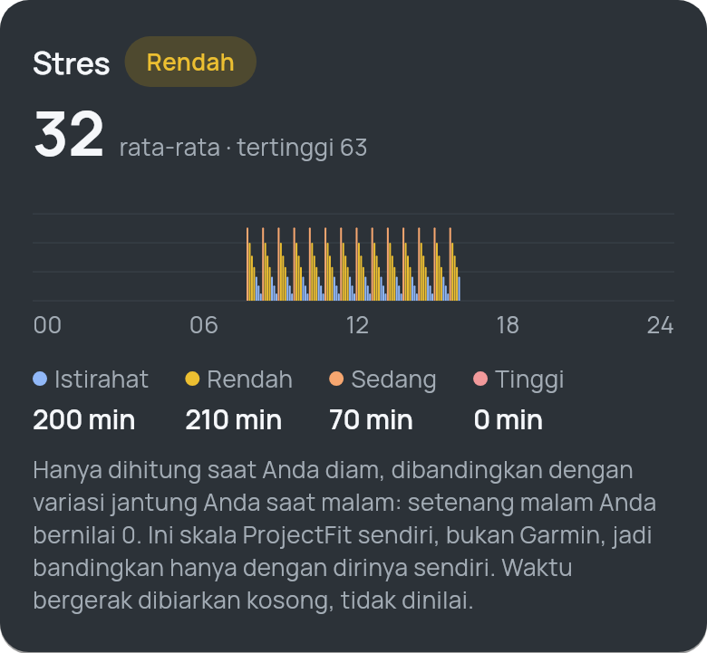
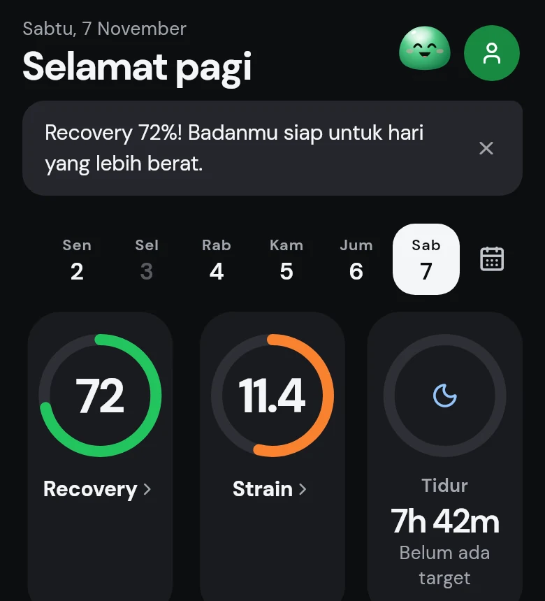
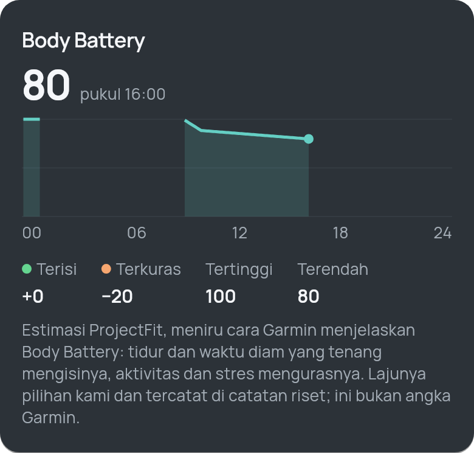
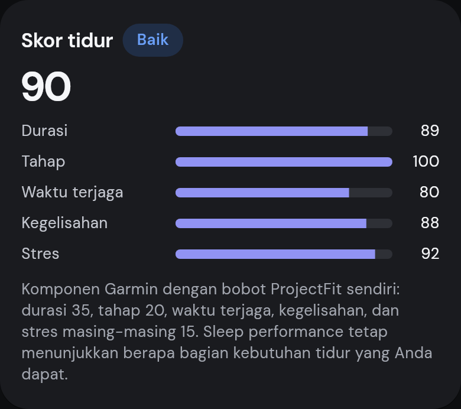
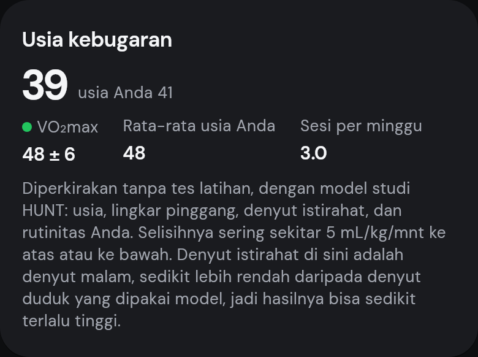
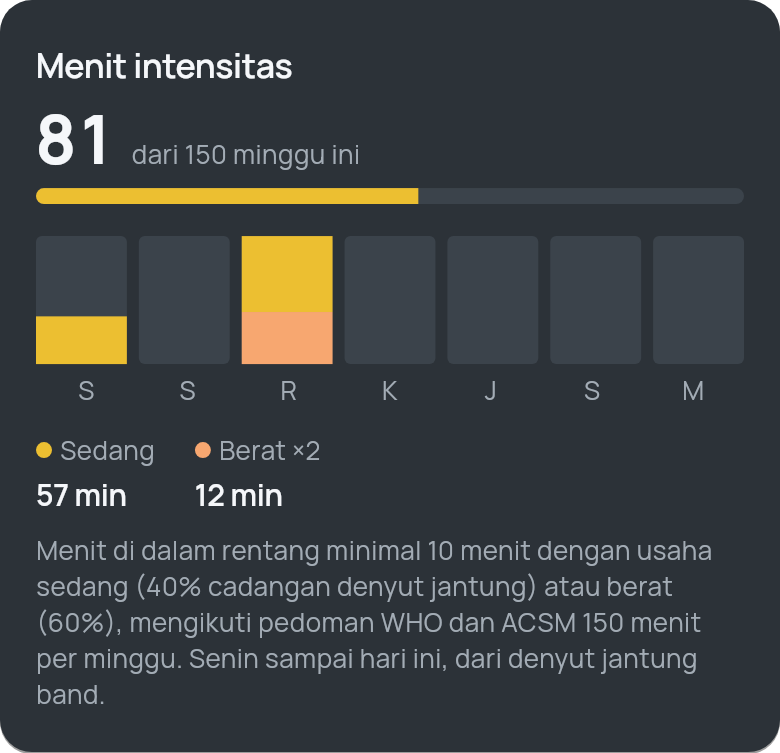
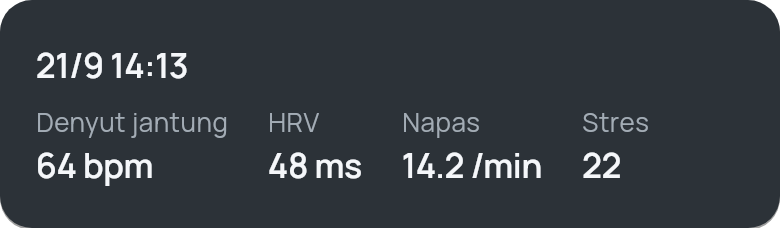

Stres, dihitung hanya saat Anda diam
Tingkat stres 0–100 dari jendela diam lima menit, dibanding variasi jantung Anda di malam hari. Waktu bergerak dibiarkan kosong, tidak dinilai.

ProjectFit membaca band WHOOP dan jam Garmin lewat Bluetooth, lalu menghitung recovery, strain, tidur, stres, dan Body Battery langsung di HP. Tanpa akun, tanpa server, tanpa langganan.
iPhone dan Android · open source (AGPL-3.0)

Fitur
Setiap angka dihitung dengan metode yang dipublikasikan, dengan konstanta yang ditulis terbuka. Kalau datanya belum cukup, ProjectFit bilang begitu, bukan menebak.
Tingkat stres 0–100 dari jendela diam lima menit, dibanding variasi jantung Anda di malam hari. Waktu bergerak dibiarkan kosong, tidak dinilai.

Terisi saat tidur dan istirahat tenang, terkuras oleh aktivitas dan stres. Setiap lajunya ditulis terbuka, jadi Anda bisa melihat kenapa angkanya bergerak.

Durasi dibanding kebutuhan tidur pribadi, tahap tidur, waktu terjaga, kegelisahan, dan stres saat tidur, masing-masing dengan bobotnya.

VO₂max dari rutinitas Anda dengan model studi HUNT (usia, lingkar pinggang, denyut istirahat, latihan), dan usia yang rata-ratanya setara.

Menit sedang dan berat per minggu terhadap target WHO 150 menit, serta latihan empat minggu yang dibagi menjadi aerobik rendah, aerobik tinggi, dan anaerobik.

Dua menit duduk diam: denyut jantung, HRV, laju napas, dan stres disimpan sebagai satu catatan.

Privasi
Tidak ada akun ProjectFit dan tidak ada server ProjectFit. Band tersambung ke aplikasi lewat Bluetooth.
Semua metrik dihitung di HP dari data mentah band. Bisa dipakai tanpa internet.
Tidak perlu mendaftar. Cadangan data dienkripsi dan disimpan di tempat yang Anda pilih.
Seluruh kode ada di GitHub dengan lisensi AGPL-3.0, jadi siapa pun bisa memeriksanya.
Pasang
ProjectFit belum ada di App Store maupun Play Store. Pasang langsung dari rilis GitHub.
iOS 15 ke atas · Apple ID gratis
Android 8.0 ke atas